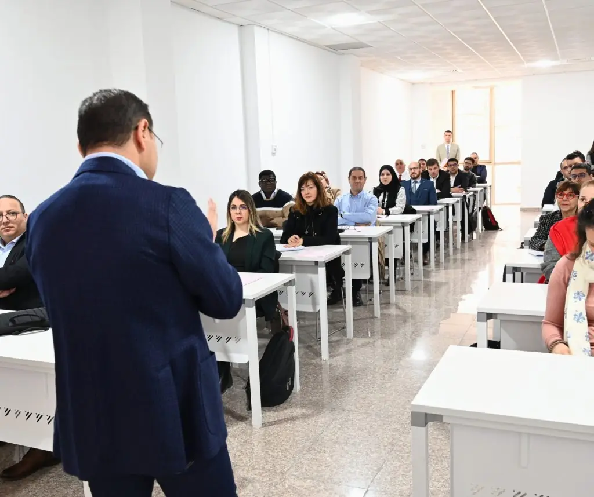
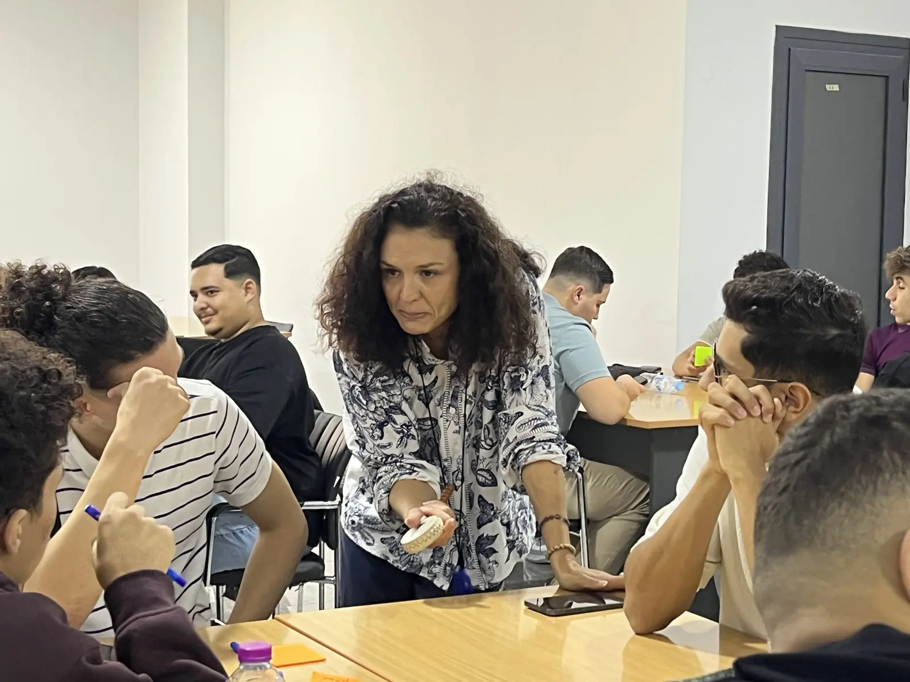
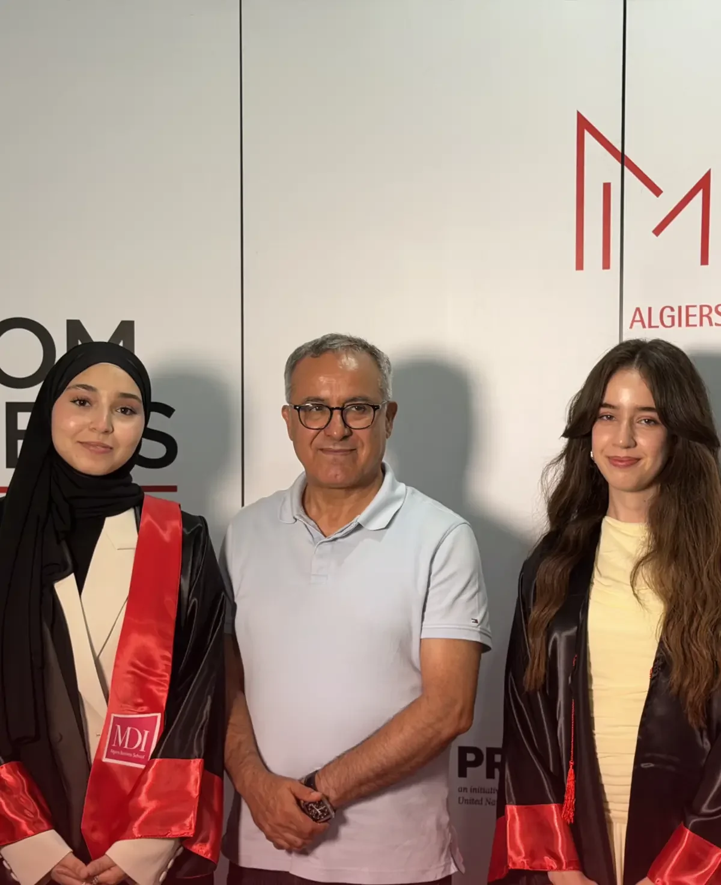

29 formations, du Bac au DBA.
Après le Bac, quatre Licences en trois ans. Après une Licence, cinq Masters en deux ans. En poste, vingt programmes Executive, de la formation de deux jours au doctorat professionnel. Chaque fiche donne la durée, l’admission, le diplôme et les métiers visés.


Le catalogue
Trouvez votre formation.
Filtrez par niveau ou cherchez un mot : un métier, une matière, un outil. Chaque ligne ouvre la fiche complète du programme : objectifs, compétences, débouchés et admission.
29 formations
- 01 Licence en ManagementEn trois ans, apprenez à gérer un service, un projet et une équipe, stage en entreprise compris
- 02 Licence Business Intelligence NouveauApprenez à transformer les données d’une entreprise en tableaux de bord utiles à ses décisions
- 03 Licence Informatique & IA NouveauProgrammation, machine learning et analyse de données, appris dans une école de management
- 04 Licence Informatique & Sécurité digitale NouveauApprenez à protéger les systèmes d’une entreprise : réseaux, cryptographie, audit et tests d’intrusion
- 05 Master en ManagementStratégie, finance, RH et conduite du changement pour diriger un département ou une business unit
- 06 Master Comptabilité-Contrôle-AuditComptabilité, audit, contrôle de gestion et fiscalité, appris sur des cas d’entreprise
- 07 Master Marketing Digital & E-BusinessApprenez à bâtir la stratégie digitale d’une marque et à en mesurer les résultats
- 08 Master Management Digital & SI NouveauPilotez des projets numériques et la transformation digitale d’une entreprise
- 09 Master Logistique Internationale & SCMApprenez à organiser la chaîne logistique d’une entreprise, des achats à la livraison
- 10 Doctorate in Business Administration (DBA)Une passerelle entre expertise managériale et recherche appliquée.
- 11 MBA International Paris (MBA IP)Le MBA International Paris, un programme de haut niveau en management pour cadres et dirigeants.
- 12 MBA Management des entreprisesFormer des décideurs agiles, responsables et visionnaires.
- 13 MBA Achats & Supply ChainUn MBA pensé pour les professionnels qui veulent transformer la supply chain en atout stratégique.
- 14 MBA Audit – Finance & Contrôle de gestionFormer des experts capables d’assurer le pilotage de la performance financière.
- 15 MBA Business Analytics & IAUne formation pour maîtriser la donnée, anticiper l’avenir et transformer l’entreprise.
- 16 MBA Cybersécurité & Gouvernance ITUn MBA au carrefour du management et de la sécurité numérique.
- 17 MBA Digital MarketingUn MBA conçu pour les professionnels qui veulent transformer les usages digitaux en véritables opportunités de croissance.
- 18 MBA Management agroalimentaireAccompagner la transformation stratégique de l’industrie agroalimentaire.
- 19 MBA Management hospitalier & santéPiloter la performance et l’innovation dans le secteur de la santé.
- 20 MBA Management des RH et RSEPiloter la stratégie RH dans un monde en transformation.
- 21 MBA Énergies renouvelablesFormer les leaders de la transition énergétique.
- 22 Banque – Finance – Assurance à confirmerUn parcours d’excellence pour faire monter en compétences les professionnels de la banque, de l’assurance et de la finance.
- 23 Droit et fiscalité des entreprises à confirmerFaire du droit et de la fiscalité une source de création de valeur pour l’entreprise.
- 24 Finance islamique à confirmerUne finance qui se veut universelle, éthique et solidaire.
- 25 Certificat Administrateur d’EntreprisesFormer des administrateurs capables de conjuguer performance économique, gouvernance responsable et intégration des critères ESG.
- 26 Essentials of MBAAccélérer le développement de leaders à tous les niveaux et maximiser leur potentiel.
- 27 Parcours Étudiant-EntrepreneurLe parcours Étudiant-Entrepreneur vous donne toutes les clés pour mener à bien vos ambitions.
- 28 Formation inter-entreprisesDes programmes pratiques pour développer vos compétences.
- 29 Formation intra-entreprisesL’efficacité dans le sur-mesure.
Aucune formation ne correspond à cette recherche. Essayez un autre mot, ou demandez conseil à un conseiller d’orientation : prendre rendez-vous
Licences
Quatre Licences, après le Bac.
Trois ans pour devenir manager opérationnel, analyste de données, développeur IA ou spécialiste de la cybersécurité. Les quatre Licences sont délivrées par un établissement privé agréé par le Ministère de l’Enseignement Supérieur et de la Recherche Scientifique ; trois d’entre elles (Business Intelligence, Informatique & IA, Informatique & Sécurité digitale) ont ouvert à la rentrée 2025 avec le département Informatique & Intelligence Artificielle de l’école.
3 ans · Licence (Bac+3)
Licence en Management
En trois ans, apprenez à gérer un service, un projet et une équipe, stage en entreprise compris. Le parcours B.A.A. 2+2 permet de poursuivre deux ans à HEC Montréal.
La fiche3 ans · Licence (Bac+3)
Licence Business Intelligence
Apprenez à transformer les données d’une entreprise en tableaux de bord utiles à ses décisions. Au programme : SQL, statistiques, visualisation et reporting.
La fiche3 ans · Licence (Bac+3)
Licence Informatique & IA
Programmation, machine learning et analyse de données, appris dans une école de management. Métiers visés : développeur IA, data analyst junior.
La fiche3 ans · Licence (Bac+3)
Licence Informatique & Sécurité digitale
Apprenez à protéger les systèmes d’une entreprise : réseaux, cryptographie, audit et tests d’intrusion. Formation encadrée par des professionnels du secteur.
La fiche
Ce que comprend une Licence MDI
Un cursus complet, du premier jour au stage.
- Admission sur concours : épreuves écrites puis entretien de motivation avec le jury, en plusieurs sessions entre l’été et la mi-septembre (deux sessions en septembre 2025)
- Semaine d’intégration à la rentrée : trois jours d’ateliers animés par des professionnels (Emploitic, i-Yusr, U.Builders en 2025), découverte du campus et de l’équipe pédagogique
- Études de cas, projets en équipe et stage en entreprise inclus dans le cursus
- Soutenance de fin d’études en troisième année devant un jury
- Parcours B.A.A. 2+2 avec HEC Montréal : deux années à MDI, puis deux années à Montréal
- Bourses d’excellence pour les bacheliers (en 2025 : moyenne au Bac d’au moins 14/20 et réussite aux épreuves de sélection) et MDI Excellence Scholarships lancées pour la rentrée 2026 ; pour la rentrée 2027, le service des admissions indique si elles sont reconduites
Masters
Cinq Masters, après une Licence.
Deux ans pour une expertise reconnue par les entreprises et les cabinets : management, audit, marketing digital, systèmes d’information, supply chain. Les Masters sont ouverts aux titulaires d’une Licence de toutes les universités et aux étudiants en dernière année.
2 ans · Master (Bac+5)
Master en Management
Stratégie, finance, RH et conduite du changement pour diriger un département ou une business unit. Avec l’option d’une année à HEC Montréal (D.E.S.S.).
La fiche2 ans · Master (Bac+5)
Master Comptabilité-Contrôle-Audit
Comptabilité, audit, contrôle de gestion et fiscalité, appris sur des cas d’entreprise. Des diplômés de ce Master exercent chez KPMG et PwC Algérie.
La fiche2 ans · Master (Bac+5)
Master Marketing Digital & E-Business
Apprenez à bâtir la stratégie digitale d’une marque et à en mesurer les résultats. Projets réels encadrés par des professionnels du digital.
La fiche2 ans · Master (Bac+5)
Master Management Digital & SI
Pilotez des projets numériques et la transformation digitale d’une entreprise. SI, ERP, méthodes agiles et cybersécurité, avec une partie des cours en anglais.
La fiche2 ans · Master (Bac+5)
Master Logistique Internationale & SCM
Apprenez à organiser la chaîne logistique d’une entreprise, des achats à la livraison. À l’international : transport, incoterms, stocks et douane.
La fiche1 + 1 · avec HEC Montréal
D.E.S.S. en administration des affaires
Une année à MDI, puis une année à HEC Montréal : le parcours 1+1 mène du Master de MDI au D.E.S.S. en administration des affaires de HEC Montréal.
Le parcours internationalLe parcours d’un Master à MDI
De la leçon inaugurale à la soutenance.
- Admission sur test écrit de type EPAGE (un sujet d’exemple est envoyé aux préinscrits) et entretien individuel avec le jury
- Leçon inaugurale de rentrée par un dirigeant : en 2025, Abdenour Houaoui, CEO de Hamoud Boualem
- Stage en entreprise en Master 2 (en 2025, les étudiants boursiers de Faderco ont fait le leur dans l’entreprise) et soutenance de fin d’études devant un jury
- Certains cours du Master Management Digital & SI sont dispensés en anglais
- D.E.S.S. en administration des affaires avec HEC Montréal : une année à MDI, une année à Montréal
- Academic Excellence Scholarships (Master) lancées pour la rentrée 2026, reconduction pour 2027 à confirmer auprès du service des admissions ; en 2025, bourses partielles ou totales sur dossier


« Ce que j’apprécie le plus à MDI, c’est la rigueur académique combinée à l’ouverture sur le monde professionnel. On se sent véritablement préparés pour les défis du marché du travail. »
Executive Education
Se former en cours de carrière.
MDI Executive Education, filiale de l’école, forme les dirigeants, les cadres et les administrateurs : vingt programmes répartis en six familles, du doctorat (DBA) et des MBA aux cycles certifiants et aux formations inter et intra-entreprises. Frais, calendrier et brochure sur demande.
1 programme · 36 mois
Le DBA, doctorat des praticiens
Une passerelle entre expertise managériale et recherche appliquée.
Voir le programme1 programme · 18 mois
Le MBA de Paris, à Alger
Le MBA International Paris, un programme de haut niveau en management pour cadres et dirigeants. Avec l’Université Paris-Dauphine | PSL et l’IAE Paris Sorbonne.
Voir le programme10 programmes · 12 mois
Dix MBA spécialisés
Management des entreprises, Achats & Supply Chain, Audit – Finance & Contrôle de gestion, Business Analytics & IA et 6 autres. Avec CESTE (Saragosse).
Voir la famille3 programmes · 18 mois
Finance, droit et banque
Banque – Finance – Assurance, Droit et fiscalité des entreprises, Finance islamique : prochaines sessions à confirmer.
Voir la famille3 programmes
Des cycles certifiants
Certificat Administrateur d’Entreprises, Essentials of MBA, Parcours Étudiant-Entrepreneur. Avec HEC Montréal et l’Institut Tunisien des Administrateurs.
Voir la famille2 programmes
Inter et intra-entreprises
Des programmes pratiques pour développer vos compétences. L’efficacité dans le sur-mesure.
Voir la familleIls ont formé leurs cadres avec MDI Executive Education
- Sonatrach
- Sonelgaz
- Cevital
- RED-MED
S’orienter
D’où partez-vous ?
Après le Bac, après une Licence ou en cours de carrière : chaque situation a sa porte d’entrée, et un conseiller vous reçoit sur rendez-vous au campus de Chéraga.
Après le Bac
Je prépare ou je viens d’avoir le Bac
Quatre Licences en trois ans. Journées d’orientation sur le campus (du 30 juin au 31 juillet en 2026), puis concours jusqu’à la mi-septembre. Bourses d’excellence pour les bacheliers (en 2025 : moyenne au Bac d’au moins 14/20).
Les quatre LicencesAprès une Licence
J’ai une Licence, je vise le Bac+5
Cinq Masters en deux ans, ouverts aux diplômés de toutes les universités et aux étudiants en dernière année. Test écrit et entretien, bourses Academic Excellence, et le D.E.S.S. 1+1 avec HEC Montréal pour une année à Montréal.
Les cinq MastersEn cours de carrière
Je suis cadre, dirigeant ou entrepreneur
Vingt programmes Executive : doctorat, MBA International, MBA spécialisés, programmes spécialisés, cycles certifiants et formation continue. Admission sur dossier et entretien pour les programmes diplômants et certifiants (et test écrit TAAM pour le MBA International Paris) ; formations intra-entreprises construites avec votre organisation.
Les programmes ExecutiveDans toutes nos formations
Le socle commun à toutes les formations.
- Établissement privé agréé par le MESRS, certifié ISO 9001:2015 et classé 4 Palmes « Top Business School » au classement Eduniversal 2025
- Une pédagogie qui part des situations réelles d’entreprise : études de cas, projets en équipe, stage
- Un corps professoral pluridisciplinaire d’enseignants-chercheurs, de consultants et de dirigeants
- Une bibliothèque sur le campus de Chéraga
- Le Job Day / Forum des entreprises (plus de 40 entreprises en 2023 et en 2024) et un réseau de plus de 3 000 diplômés depuis la création de l’école
- L’incubateur labellisé GEM-Start pour les porteurs de projet
Comparer
Comparez les formations d’un coup d’œil.
Niveau, durée, rentrée, mode d’admission : de quoi comparer en un coup d’œil avant d’ouvrir une fiche. Les frais de scolarité et les modalités de paiement vous sont présentés lors de votre rendez-vous d’orientation.
| Formation | Niveau | Durée | Rentrée | Admission | Frais |
|---|---|---|---|---|---|
| Licence en Management | Licence · Bac+3 | 3 ans | Septembre – octobre | Bac · concours (écrit + entretien) | Sur demande |
| Licence Business Intelligence | Licence · Bac+3 | 3 ans | Septembre – octobre | Bac · concours (écrit + entretien) | Sur demande |
| Licence Informatique & IA | Licence · Bac+3 | 3 ans | Septembre – octobre | Bac · concours (écrit + entretien) | Sur demande |
| Licence Informatique & Sécurité digitale | Licence · Bac+3 | 3 ans | Septembre – octobre | Bac · concours (écrit + entretien) | Sur demande |
| Master en Management | Master · Bac+5 | 2 ans | Septembre – octobre | Licence · test écrit + entretien | Sur demande |
| Master Comptabilité-Contrôle-Audit | Master · Bac+5 | 2 ans | Septembre – octobre | Licence · test écrit + entretien | Sur demande |
| Master Marketing Digital & E-Business | Master · Bac+5 | 2 ans | Septembre – octobre | Licence · test écrit + entretien | Sur demande |
| Master Management Digital & SI | Master · Bac+5 | 2 ans | Septembre – octobre | Licence · test écrit + entretien | Sur demande |
| Master Logistique Internationale & SCM | Master · Bac+5 | 2 ans | Septembre – octobre | Licence · test écrit + entretien | Sur demande |
Les étudiants de MDI peuvent bénéficier de prêts étudiants à taux préférentiels et de modalités de remboursement flexibles grâce au partenariat avec Al Salam Bank. Grille tarifaire : academique.edu@mdi-alger.com (nouvel onglet) · 0560 93 94 10 — Bourses : admission@mdi-alger.com (nouvel onglet).
Executive Education
Les vingt programmes Executive.
| Programme | Durée | Rythme | Diplôme · partenaire | Frais |
|---|---|---|---|---|
| Doctorate in Business Administration (DBA) | 36 mois | Ateliers de recherche + rédaction et soutenance d’une thèse | Voir le programme | Sur demande |
| MBA International Paris (MBA IP) | 18 mois | Temps partiel, format hybride (modules de 30 h, sessions du vendredi au dimanche) | MBA conférant le grade de master, délivré conjointement par Paris-Dauphine | PSL et l’IAE Paris Sorbonne | Sur demande |
| MBA Management des entreprises | 12 mois | Blended Learning — présentiel un week-end sur deux, distanciel un samedi sur deux | MBA spécialisé · CESTE – Escuela Internacional de Negocios | Sur demande |
| MBA Achats & Supply Chain | 12 mois | Blended Learning — présentiel un week-end sur deux, distanciel un samedi sur deux | MBA spécialisé · CESTE – Escuela Internacional de Negocios | Sur demande |
| MBA Audit – Finance & Contrôle de gestion | 12 mois | Blended Learning — présentiel un week-end sur deux, distanciel un samedi sur deux | MBA spécialisé · CESTE – Escuela Internacional de Negocios | Sur demande |
| MBA Business Analytics & IA | 12 mois | Blended Learning | MBA spécialisé · CESTE – Escuela Internacional de Negocios | Sur demande |
| MBA Cybersécurité & Gouvernance IT | 12 mois | Blended Learning | MBA spécialisé · CESTE – Escuela Internacional de Negocios | Sur demande |
| MBA Digital Marketing | 12 mois | Blended Learning — présentiel un week-end sur deux, distanciel un samedi sur deux | MBA spécialisé · CESTE – Escuela Internacional de Negocios | Sur demande |
| MBA Management agroalimentaire | 12 mois | Blended Learning | MBA spécialisé · CESTE – Escuela Internacional de Negocios | Sur demande |
| MBA Management hospitalier & santé | 12 mois | Blended Learning | MBA spécialisé · CESTE – Escuela Internacional de Negocios | Sur demande |
| MBA Management des RH et RSE | 12 mois | Blended Learning — présentiel un week-end sur deux, distanciel un samedi sur deux | MBA spécialisé · CESTE – Escuela Internacional de Negocios | Sur demande |
| MBA Énergies renouvelables | 12 mois | Blended Learning | MBA spécialisé · CESTE – Escuela Internacional de Negocios | Sur demande |
| Banque – Finance – Assurance | 18 mois · session à confirmer | 3 jours toutes les 3 semaines | Voir le programme | Sur demande |
| Droit et fiscalité des entreprises | 18 mois · session à confirmer | Blended Learning | Voir le programme | Sur demande |
| Finance islamique | 18 mois · session à confirmer | Blended Learning | Voir le programme | Sur demande |
| Certificat Administrateur d’Entreprises | 6 mois | Présentiel : 5 modules de 3 jours + 1 journée d’évaluation | Certificat co-signé par l’ITA, examen final (80/100 minimum) · Institut Tunisien des Administrateurs | Sur demande |
| Essentials of MBA | Environ 20 semaines | Blended learning, 2 séances par semaine | Certificat co-signé par HEC Montréal et MDI Executive Education | Sur demande |
| Parcours Étudiant-Entrepreneur | 6 mois | Blended learning, 1 atelier par semaine (samedi, 9 h – 16 h) | Certificat étudiant-entrepreneur délivré par MDI | Sur demande |
| Formation inter-entreprises | 2 à 5 jours par formation | Sessions inter-entreprises planifiées | Certificat en Management (plusieurs modules d’une même spécialité) | Sur demande |
| Formation intra-entreprises | Du module ponctuel au programme de longue durée | Sur mesure, co-construit avec l’entreprise | Voir le programme | Sur demande |
Frais, calendrier des sessions et brochure détaillée : sur demande auprès de MDI Executive Education. Faire une demande
Admissions
Et maintenant, candidatez.
Préinscription en ligne ou au campus, puis concours ou test d’admission : nos conseillers vous reçoivent à Chéraga pour un entretien d’orientation avant de choisir.